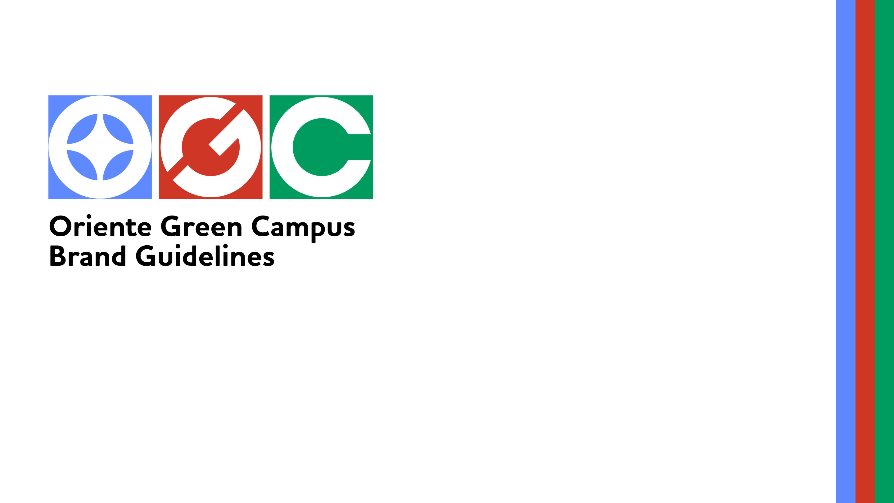
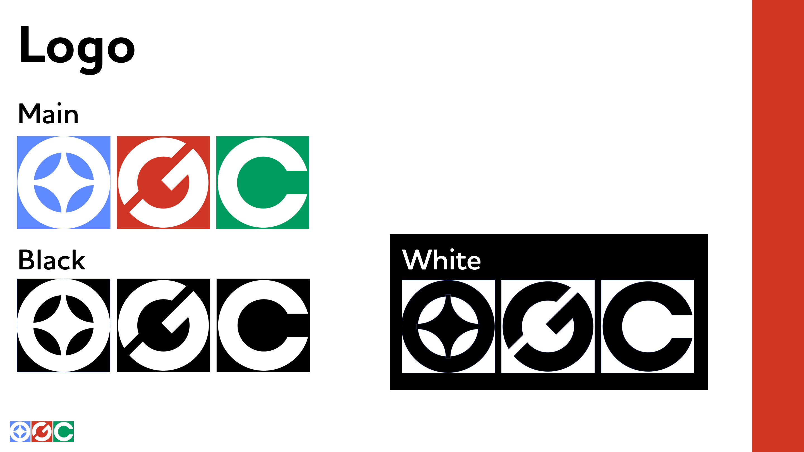
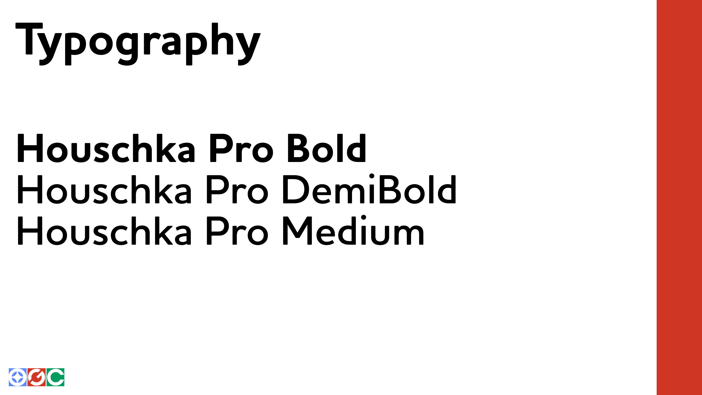
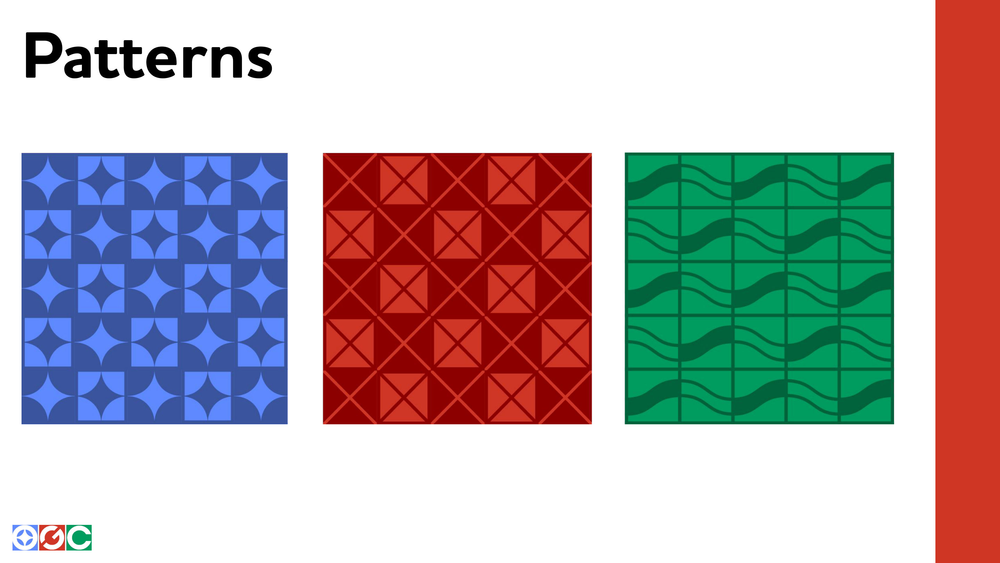
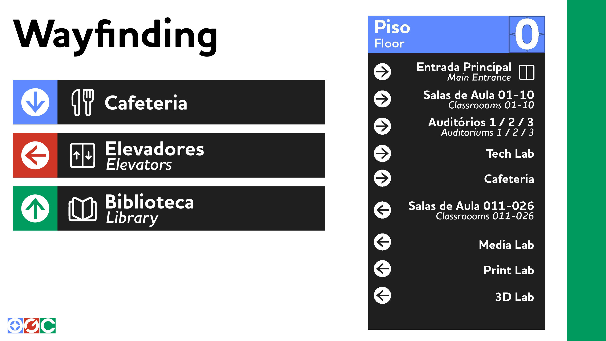
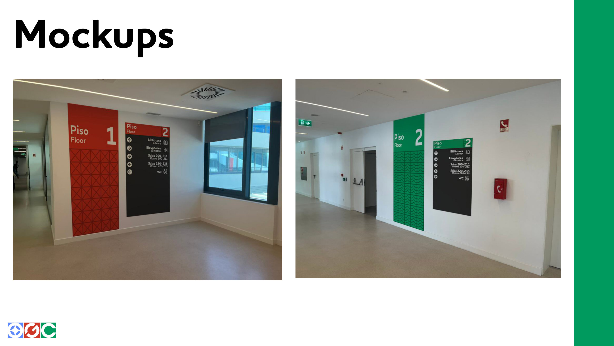

Branding — Wayfinding — UX/UI — 2025
A comprehensive visual identity for wayfinding in the new IADE campus — from the brand and its physical signage system to a companion app prototype.

The project was built in two halves. The first focused on creating the brand, its visual assets and the mockups for the physical component of the wayfinding system — culminating in the brandbook. The second half moved into a Figma app prototype, delving into UX heuristic evaluations, app prototyping and design.
Across the whole project I acted as project lead of our group of four, deciding and consulting with my fellow members on the design direction and outlook of the project.
My role in the first component was creating the visual identity — the brand identity, the mockups and the overall idea. Each square in the logo stands for one of IADE’s three homes — the Chiado palace, the Santos campus and the new Oriente Green Campus — set in the primary colors of digital design (RGB), a nod to the subjects taught at IADE.





For the second half, I chose the design direction — a glassy, green outlook in unison with the new campus’ cafeteria — and templated the UI. Try the prototype below.